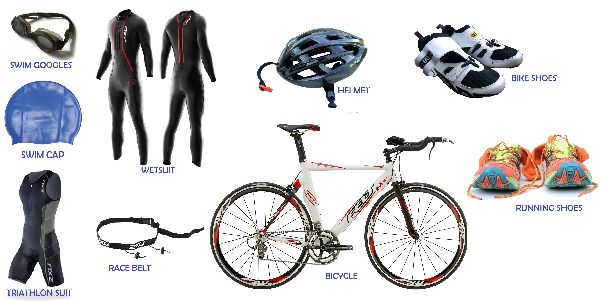

Equipment
The three disciplines require specific equipment:
- Swimming: Swimsuit, goggles, swim cap, if is too cold a wetsuit
- Cycling: Bicycle, helmet, cycling shoes, glasses
- Running: Running shoes

Depending on the distance and weather conditions, additional gear may be necessary for safety and comfort. For example, a wetsuit may be required for swimming in cold water, and a hydration system may be needed for longer distances. Also, in the longest distance you may wear socks for the cycling and running disciplines, but in the shortest distances you can do it without them.